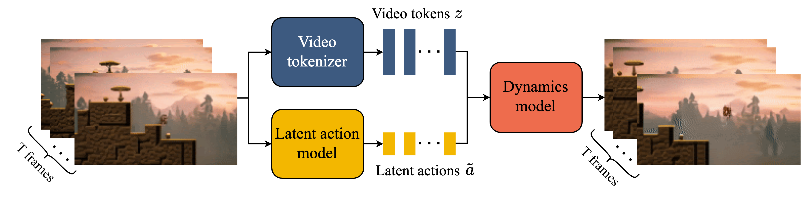

第 29 章 视频生成与世界模型
💡 本章导读
视频生成是图像生成的"维度灾难版"：时间轴带来 $10^2$–$10^3$ 倍的数据量、跨帧一致性需求、以及只有图像 $1/10$ 大小的开源语料。本章先讲清三座大山，再沿"时空分解 U-Net → DiT 化（Sora）→ 开源大练兵（CogVideoX/HunyuanVideo/Wan）"的主线解剖架构演化，最后跳到"世界模型"这个激动人心又争议缠身的话题。与第 27 章的 T2I 相同的规律再次上演：Transformer 化、flow 目标、重标注数据、蒸馏部署——生成模型的知识是迁移的，学会一次就能看懂下一个模态。
1.视频生成的三座大山：时序一致、三维压缩、数据
第一座山：时序一致性。一张图只需要"自洽"，一段视频需要"处处连贯"——主体外观跨帧恒定、运动符合物理直觉、遮挡关系随时间正确演化。图像模型逐帧生成必然漂移（第 26 章的一致性生成问题的视频放大版），所以视频模型必须让多帧在同一前向中被联合建模——这正是所有架构设计的出发点。第二座山：三维数据压不下去。一段 1080p×16 帧×RGB 的视频是 $1920{\times}1080{\times}16{\times}3\approx 10^8$ 维——直接对原始像素做扩散在算力上不可行，所以视频模型的第一性问题是"如何压缩时间-空间-通道三维"：空间用 VAE（第 24 章）、时间用时序下采样/3D 因果卷积、码本用联合时空 tokenizer。第三座山：数据。视频语料比图像少两个数量级，且天然短（网络视频多在 10 秒内）、未标注（需要先过 captioner——第 27 章重标注思想的应用）、版权敏感。Sora 报告暗示"用图像数据补视频数据"是关键配方：图像让模型学会"怎么画好"，视频让模型学会"怎么动"。
先展开第三座山（数据），因为它是其余两座山的地基。视频数据的加工链比图像长得多：①切片——网络视频多为混剪，先做镜头边界检测切成单镜头片段；②过滤——美学分（延续 LAION-5B 体系）、运动分（光流幅度，剔除静止与过抖）、OCR 比例（剔除纯文字屏录）、水印检测；③标注——VLM 视频版逐镜头生成三档 caption（短/中/长），并对"运镜/转场/主体"做结构化标注（运镜标签是用户 prompt 的高频词，"推拉摇移"不标注则指令遵循无从学起）；④分段配比——与图像数据按阶段混合（早期图像 50%+ 视频 50%，后期视频为主），图像数据承担"画质先验"角色。整条链的成本约为图像数据管线的 5 倍——视频数据工程是 2025 年生成团队最大的 HR 招聘方向（第 34 章详述）。
三座山的破解优先级不同：一致性是"能不能用"的问题（解决不了就没有产品），所以架构创新最密集；压缩是"贵不贵"的问题，工程迭代持续发生（每代 3D VAE 压缩率都更高）；数据是"天花板"问题——架构再好，数据分布里没有的物理常识学不出来。值得注意的是三者的耦合：压缩率提高 → 同算力可训更长视频 → 长时序依赖才能被学到；caption 质量提高 → 同架构 prompt 遵循更好。**先修地基（tokenizer+数据），再修上层（架构），是视频领域验证过的施工顺序。**
📐 理论视角：视频 token 数量的算术暴力
设分辨率 $H{\times}W$、帧数 $T$、VAE 空间压缩 $f_s{=}8$、时间压缩 $f_t{=}4$、patch 化 $p{=}2{\times}2$、通道 $c{=}16$：latent 序列长度 $N = \frac{H}{f_s p}\cdot\frac{W}{f_s p}\cdot\frac{T}{f_t}$。代入 Sora 风格参数（$1080p$ 档）：$N\approx 135{\times}240{\times}... $（按 $1280{\times}720$、$T{=}64$ 算：$(720/16)\times(1280/16)\times(64/4) = 45{\times}80{\times}16 = 57{,}600$ 个 latent token）。5.8 万 token 的全注意力是图像（~4k token）的 15 倍——这就是为什么视频模型的第一战场是"注意力效率"（时空分解、窗口注意力、3D VAE 更激进压缩），也是为什么 1 分钟 1080p 视频的生成算力是单张图的 $10^3$ 倍量级。理解这个算术，就能理解后面每个架构选择。
2.奠基期：Video Diffusion 与时空分解
VDM（Video Diffusion Models，arXiv:2204.03475，Google，2022）是视频扩散的奠基论文：把 3D U-Net 改造为分解式时空注意力——空间注意力（帧内）+ 时间注意力（帧间、每像素位置对所有帧做 self-attention），先联合训练再分阶段预训练（先图像后视频）。这个"空间-时间分解"模板统治了此后两年：ModelScope、Zeroscope、AnimateDiff（arXiv:2307.04725——把预训练好的"运动模块"插进冻结的 SD，让任何 SD 社区模型"动起来"，是 2023 年中文 AIGC 社区现象级技术）皆是此路线。分解式的优点是算力友好，缺点是时间注意力是"事后补丁"——空间先想清楚、时间再缝合，长程运动一致性先天不足。
这一时期还有两个值得记住的工程结论：①三阶段训练法——图像底模 → 低分辨率短视频 → 高分辨率长时长，每阶段混入前一阶段数据防遗忘，CogVideoX/Wan 至今沿用；②SVD（Stable Video Diffusion，arXiv:2311.15127）确立了"图像底模+时间层微调"的图生视频（I2V）范式：把 SD2.1 的 2D 卷积膨胀为伪 3D、只训练时间层、用运动桶（motion bucket id）控制幅度——AnimateDiff/SVD 之后，"图生视频"与"文生视频"成为两条并列产品线，前者因主体可控在广告/电商场景反而更快商业化。分解式时代的典型病症：镜头缓慢位移时人物"换脸"、快速运动时"果冻感"——这些伪影的根源正是时间建模能力弱于空间，直到全 3D 注意力登场才根治。
VDM 的两个遗产细节：其一，时间注意力放在 U-Net 的中低分辨率层（计算友好且信息层次合适），这个"放哪一层"的问题在 DiT 化后消失（全层全注意力），但当年决定了可行性；其二，VDM 发现联合训练图像+视频反而提升视频质量（图像提供高质量先验），这一"图像充 vitamin"的配方被所有后继者继承（CogVideoX 图像-视频混训、Sora 的图像数据参与）。另外一个反直觉发现：简单地在时间维级联三个独立 U-Net（帧间无交互）质量奇差——"时间建模不可外包给单帧模型"，这从反面证明了联合时空建模的必要性。
在进入 DiT 时代前，先把任务光谱摆清楚——视频生成家族按条件类型分五类：T2V（文生视频，条件最弱、自由度最大）、I2V（图生视频，首帧锚定，主体可控）、V2V（视频到视频：风格化/超分/插帧，常复用 ControlNet 思想——第 26 章控制在视频上的推广）、续写式（给定前 N 帧续生成，流式生产的雏形）、可交互（条件含动作，世界模型，第 5 节）。五类的训练框架日益统一（同一模型多任务训练），但产品线分立——架构统一、产品分化是生成领域反复出现的结构。
3.Sora 与 spacetime patch：DiT 的视频化
Sora（OpenAI，2024 年 2 月技术报告）没有公开训练细节，但其报告确立了三个工程公理，影响延续至今：①spacetime patch（时空补丁）——对视频 latent 做 3D patch 化（跨帧取 patch），把视频变成一个统一的 token 序列，时序与空间在注意力中不再分层——分解式的"补丁"被升格为"原生联合"；②可变分辨率/时长/宽高比——训练用原生分辨率不做裁剪（继承 LLM 的 token 化灵活性，"视频的 GPT 时刻"），推理时可自由指定分辨率；③视频原生 DiT + 大算力——Transformer 骨架承接图像 DiT 的 scaling 经验（第 27 章图 27-7 的曲线在视频上重画）。"世界模拟器"争议：OpenAI 称 Sora 是 world simulator，学界（如 LeCun）强烈反对——物理一致性远未达标（玻璃碎了没有碎片、切开的蛋糕没有内芯）。2025 年后的共识是：Sora 是"物理常识的统计模仿者"，学了足够的物理先验但无因果模型；"世界模型"需要可与行动交互的预测-干预闭环（第 5 节）。
Sora 之后的扩散修复也要如实记录：Sora 演示中大量样本是精选的，实际开放测试后用户发现它"好看但物理脆弱"；2025 年的 Veo 3/可灵 2.x 在物理合理性上才真正越过"可用线"，靠的不是新架构，而是更干净的物理相关数据（运动分过滤+运镜标注）+ 偏好优化（人类对物理错误的踩踩点点被学回模型）+ 音视频联合训练（声音反过来约束物理）。技术史上常见的一幕：架构革命之后，真正打磨产品的是"数据与对齐的笨功夫"——Sora 定方向，笨功夫出产品。
📄 论文精读：Sora 技术报告（OpenAI，2024.02）
形态：这是一篇"无公式、无消融、无权重"的 9 页报告，却是当年被引用/解读最多的生成模型文档——它的价值在"公理"而非"证明"。技术要点拼图（报告+后续社区逆向拼图）：视频经视频压缩网络（疑似 3D VAE）降到 latent，做 spacetime patch 化后进入 DiT（社区普遍推测融合了 SD3 式文本条件与大量算力）；训练数据包含原生分辨率/时长的"宽高比-时长桶"（aspect-ratio bucketing），推理时可外插分辨率与时长。三个可验证的涌现现象（报告展示）：①固定随机种子下改变背景/场景、主体外观保持——说明模型内部已有"主体-场景解耦"表征；②镜头运动（推拉摇移）连续合理——虚拟摄像机的出现；③简单的 3D 一致性（遮挡、透视）——尽管远未达标。对业界的真实影响：报告没有开源任何东西，但"视频也能 DiT"这个信号让全球团队在同一周内重写了路线图——CogVideoX、HunyuanVideo、Wan 的架构图里都有 Sora 的影子。方法论遗产：在生成模型上，"把 LLM 的三件套（token 化、Transformer、scaling）搬过来"这一招，图像用过了、视频用过了，下一个是任何有结构的连续信号。
分辨率外插的细节值得停留。传统扩散模型固定分辨率训练，换分辨率就崩（位置编码超纲）；Sora 用"时长-宽高比-分辨率桶"混合训练+patch 化的位置编码，使模型在推理时可以接受训练中从未出现的规格——例如 1080p 训练、4K 推理（细节质量会衰减但结构成立）。这继承了 ViT 的 patch 哲学与 LLM 的序列长度泛化，把"视频规格"从模型约束变成了产品参数。对下游生态的意义：规格自由 → 后期裁剪/拼接不再受生成端限制 → 视频生产流水线才能像剪辑软件一样组织素材。很多"体验创新"其实是"解除约束"——识别一个领域里"哪些约束是人为的"，往往是产品机会所在。
承接第 27 章的规律清单：把 T2I 的四动因套到视频上——数据（VLM captioner 给视频重标注：CogVideoX 的CogVLM 视频版、Wan 用 UMT5+重标注管线）；目标函数（SD3 的 rectified flow 被 HunyuanVideo/Wan 原样继承）；架构（DiT/MMDiT 化，分解注意力被淘汰）；工程（步数蒸馏+引导内置，2025 年各家的"Turbo/Lightning 版"齐发）。四年之内，视频生成完整重演了图像生成的技术史——而且每一步都更快：图像用了 8 年走完的路线，视频用 3 年。这个"模态间的技术迁移加速"是本 Cookbook 最想传递的元规律：底层知识几乎不换，换的只是数据形态。
📜 历史注脚：从"抽卡时代"到"分钟级长视频"
2023 年的文生视频被用户戏称为"抽卡"：Runway Gen-2/Pika 一次 4 秒、手脚乱飞、镜头一转主体就换，用户生成几十次挑一次可用——"抽卡率"成为社区黑话。2024 年 2 月 Sora 的 60 秒演示片（气球、东京街景女子）虽未开放，但把"能生成什么"的预期一举拉高；2024 年 6 月开源的 CogVideoX 与 12 月的 HunyuanVideo 让"本地长视频"成为可能；2025 年起可灵 2.x/即梦/Veo 3 把时长推到分钟级、并加上了同步音频（Veo 3 的"出声"是产品分水岭）。三年时间，"抽卡"变成"工业化出片"——生成内容产业化的第一块基石落定。
4.开源主力：CogVideoX、HunyuanVideo、Wan2.x 与 LTX-Video
CogVideoX（智谱，arXiv:2408.06072）：三个关键设计——3D 因果 VAE（时间维度因果压缩：首帧无后向依赖，支持图像-视频统一训练）、3D 全注意力（不做时空分解，patch 化后一次注意力完成时空联合——小模型上验证了 Sora 公理）、渐进式训练（低分辨率短时长 → 高分辨率长时长）。2B/5B 两档权重+微调生态（CogVideoX-factory）使其成为 2024 下半年开源生态的主力。HunyuanVideo（腾讯，2024.12，arXiv:2412.03603）：13B 的 DiT+flow 目标（SD3 公式的视频化）、双流→单流块设计（Flux 同款）、MLLM 文本编码器替换 T5（用 Qwen-VL 类模型编码 prompt，语义条件更强）、照片级画质与运动质量在 2025 年初的开源评测中长期第一。Wan2.x（阿里，2025）：1.3B/14B 双档、原生支持中英双语文字渲染进视频、图生视频质量佳，其 1.3B 版本让消费级显卡（24GB）可跑视频 DiT——开源民主化的代表作。LTX-Video（Lightricks，2024.11）：把"快"做到极致——2B 参数+极高压缩比 3D VAE，实时级生成（比播放速度快的 DiT），定位"草稿迭代"场景。2025–2026 补充：HunyuanVideo-Avatar/I2V 系列、Wan2.2 的双模型(MoE 式高低噪分工)、Step-Video、SkyReels 等把图生视频、数字人、音视频同步逐步补全。


开源生态的分工格局也在这批模型上成形：CogVideoX 提供了最完整的微调工具链（CogVideoX-factory：T2V/I2V LoRA、control 版本、社区数据脚本），是"想动手改模型"的开发者首选；Wan 以轻量档+中英双语覆盖消费级；HunyuanVideo 以质量锚点吸引商用二开；LTX 填充"实时草稿"生态位。四者互补而非替代——开源视频模型在 2025 年已形成类似 SD1.5/SDXL 时代的多层次生态，第 51 章的项目推荐清单会给出各生态的入门仓库。
💻 代码：CogVideoX 与 Wan2.1 的推理与 LoRA 微调（diffusers）
from diffusers import CogVideoXPipeline, CogVideoXDDIMScheduler
import torch
# --- CogVideoX-5B 文生视频推理 ---
pipe = CogVideoXPipeline.from_pretrained(
"THUDM/CogVideoX-5b", torch_dtype=torch.float16
).to("cuda")
pipe.scheduler = CogVideoXDDIMScheduler.from_config(
pipe.scheduler.config, timestep_spacing="trailing")
frames = pipe(
prompt="一只橘猫从窗台跳上书架，阳光穿过窗帘，电影感",
num_inference_steps=50, guidance_scale=6.0,
num_frames=49, # 3D VAE 时间压缩 4 → 约 6 秒
).frames[0]
# 导出：用 diffusers.utils.export_to_video(frames, "cat.mp4", fps=8)
# --- Wan2.1 1.3B 消费级 LoRA 微调要点（diffusers 训练脚本）---
# accelerate launch train_i2v_lora.py # --pretrained_model_name_or_path Wan-AI/Wan2.1-I2V-1.3B-480P # --rank 128 --learning_rate 1e-4 --max_train_steps 3000 # --mixed_precision bf16 --gradient_checkpointing # --instance_data_root ./my_domain_videos # --caption_column captions.txt # 每行一个：文件名,描述
# 显存预算：1.3B 模型 + rank128 LoRA + 480P×49帧 ≈ 22GB（24GB 卡可跑）
# 训练完：load_lora_weights() 后即可在原 pipeline 上即插即用工程要点：①视频推理先算显存账——token 数是图像的 15 倍，attention 用 memory-efficient/Flash 后仍建议从低分辨率试起；②fps 由 3D VAE 时间压缩率反推（CogVideoX 的 49 帧≈6 秒@8fps）；③I2V 比 T2V 主体稳定得多，能提供首帧就提供首帧。
许可证的形态学在视频领域出现新变体：HunyuanVideo 用"腾讯社区许可"（月活 1 亿以下商用免费）、Wan 用 Apache 2.0（最开放）、CogVideoX 前期非商用后放开。与 LLM 时代相同，许可条款已经成为模型竞争力的一部分——同等质量下选许可宽松者，是 2025 年企业选型的默认策略（第 51 章项目清单标注许可）。
| 模型 | 参数 | 架构要点 | 目标函数 | 文本编码器 | 定位 |
|---|---|---|---|---|---|
| AnimateDiff (2023) | ~1.7B(模块) | 冻结 SD+运动模块 | 扩散 | CLIP | 让旧 SD 模型动起来 |
| CogVideoX (2024.06) | 2B/5B | 3D VAE+3D 全注意力 | 扩散 | T5 | 开源复现 Sora 公理 |
| LTX-Video (2024.11) | 2B | 超高压缩 3D VAE | DiT 扩散 | T5+CLIP | 实时级草稿生成 |
| HunyuanVideo (2024.12) | 13B | 双流→单流 MMDiT、大 RoPE | Rectified Flow | MLLM(Qwen 系) | 开源画质天花板 |
| Wan2.1/2.2 (2025) | 1.3B/14B | 3D VAE、DiT、中英文字渲染 | Flow | UMT5+CLIP | 消费级可跑/图生视频 |
| CogVideoX1.5/清影系 (2025) | 5B+ | 更高分辨率、音效扩展 | Flow/扩散 | T5/GLM | 中文生态一体化 |
蒸馏的巨大红利在视频被兑现：2025 年各家"加速版"（Wan 系蒸馏、CogVideoX-Turbo、Hunyuan 的 light 版）普遍把 50 步压到 4–8 步，代价集中在运动复杂度上限（复杂运镜/快动作略有衰减）。蒸馏方法从 SDXL-Turbo 的 ADD（对抗+分布匹配）演进到 LADD、DMD2（分布匹配蒸馏 v2），在视频上还需额外处理时间维度的曝光偏差——少步生成时相邻帧误差相关，容易"闪"，因此视频蒸馏普遍保留时间层的高步数或加时序一致性损失。这提示：蒸馏不是机械压缩，各模态都有自己的"敏感层"。
💡 技巧：给视频模型"选型试金石"的 8 条 prompt
拿这 8 条固定 prompt 跑任何新视频模型，能快速摸出它的真实水位：①"特写：一滴墨水滴入清水中缓慢晕开"（流体物理）；②"无人机视角：山谷云海日出，镜头缓慢前推"（虚拟运镜）；③"红色球从斜坡滚下撞倒一排多米诺骨牌"（刚体碰撞因果）；④"一位女士在雨中撑伞回眸，慢动作"（人物+慢动作+水花）；⑤"日式街角便利店招牌，镜头横移"（中文/日文文字渲染）；⑥"剪刀剪开一张红纸"（细粒度手部操作）；⑦"蜡烛火焰在风中摇曳熄灭"（微观湍流）；⑧"同一个角色在不同场景出现三次"（跨镜头主体一致性）。①③⑦考物理常识，②④⑥考渲染，⑤⑧考一致性——8 条覆盖视频生成的核心战场。
📄 论文精读：HunyuanVideo（arXiv:2412.03603，2024.12）
定位：截至 2025 年中，开源视频模型的画质标杆；13B 参数是当时开源最大。五个设计决策：①骨架——双流→单流的 MMDiT 块（Flux 方案的视频化）：前段文本/视频各走各的投影（语义注入充分），后段合并单流（多模态融合充分）；②目标函数——mean-flow 式 rectified flow 变体，配合"时间-分辨率-质量"三级渐进训练；③文本编码——放弃 T5，用 MLLM（Qwen 系）做 encoder 并丢弃其生成头：MLLM 的 prompt 理解显著强于纯文本模型（长描述/复杂运镜指令）；④窗口注意力+时间 RoPE——空间全注意力、时间加相对位置，兼顾长序列成本；⑤后训练——偏好优化（运动质量人类偏好数据+DPO 思想，第 37 章对齐技术的视频版）。实测要点：运动幅度大且物理合理（ VBench 运动维度第一梯队）、文字渲染可用、5 秒 720p 单卡（80GB）推理约 1–2 分钟。工程启示：HunyuanVideo 证明"视频 DiT 的天花板由 tokenizer+条件注入决定，而非盲目堆参数"——同期的更大参数模型并未打得过它。
5.世界模型视角：Genie、GameNGen 与"世界模拟器"之争
"视频生成"与"世界模型"的分界线在可交互性：前者是"给定 prompt 产出固定视频"（open-loop），后者是"给定动作预测下一状态"（closed-loop，可被玩家/智能体反复干预）。GameNGen（Google，arXiv:2408.14837）：把 DOOM 游戏引擎"学"进一个扩散模型——以历史帧+动作为条件，实时生成下一帧游戏画面，证明"游戏引擎=一个可交互的因果视频模型"在原理上可行；Genie（DeepMind，arXiv:2402.15391）：从 20 万小时无标注游戏视频自监督学习出"潜在动作"（latent action model 发现"哪些帧间变化是可控行为"）， Genie 2（2024.12）将其扩展到 3D 可玩世界；Genie 3 / Cosmos（NVIDIA，2025）进一步面向机器人/自驾的"物理仿真用途"——世界模型从玩具转向具身智能的数据工厂（合成可交互训练环境，第 33 章呼应）。
GameNGen 的工程拆解值得一读：它不是单个端到端模型，而是两段式——①轻量策略网络玩 DOOM 生成"历史帧-动作"数据（~900 万帧）；②以 SD1.4 为底模的扩散模型做"下一帧渲染器"，条件是历史帧序列（去噪 U-Net 前几层加时间通道）+动作 one-hot。推理时帧率 20fps（TPU v5 上），视觉盲测中人类玩家区分真假 DOOM 的准确率仅略高于随机。两个启示：其一，"游戏引擎知识"可以被压缩进扩散权重（一个游戏≈700MB 模型 vs 原始 DOOM 数 MB——存储效率倒挂，但换来的是可泛化的渲染先验）；其二，交互视频的"引擎化"分两条路：GameNGen 学已有引擎（模仿），Genie 从视频中发现交互（发现）——前者工程可控，后者天花板更高。
Cosmos（NVIDIA，2025）把世界模型推向"工业化仿真基础设施"：基于物理仿真数据（Isaac/自定义渲染器）训练的 WFMs（world foundation models），提供 text/video/action 到未来视频的条件生成 API，明确目标市场是机器人与自驾的合成数据与策略评测——给机器人公司提供"数字训练场"。与 Genie 的学术气质不同，Cosmos 直接绑定 NVIDIA 的仿真工具链，标志着世界模型进入"平台竞争"阶段：谁的仿真器更好用，谁就可能成为具身智能时代的 Unity/Unreal。

世界模型的三层定义（本书口径）：L1预测器——给定历史帧预测未来帧（视频生成本身就是 L1）；L2可干预预测器——给定历史帧+动作预测未来帧（GameNGen/Genie）；L3反事实模拟器——回答"如果当初做不同动作会怎样"（需要因果结构，目前无模型达标）。视频生成公司说的"world simulator"大多是 L1+视觉常识；具身智能需要的是 L2/L3。Genie 的潜在动作思想值得单独讲：它训练一个"动作发现器"来回答"相邻两帧之间，最可能是哪个'按钮'导致的变化"——把无标签视频变成（帧, 动作, 帧）三元组，这是从观察中抽象控制变量的代表性工作，其思想在机器人领域（VPT/Genie 系）持续发酵。对多模态大模型的意义：世界模型是"理解"的试金石——能预测才能证明理解（第 44 章多模态推理的具身分支），而"用世界模型当数据工厂"（无限可交互环境供智能体练习）可能是 2026–2030 具身智能突破的最大杠杆。
世界模型的反方证据同样重要：2024–2025 年的多份评测显示，视频模型在"反事实物理"上系统性失败——液体倒进杯中溢出不遵循体积守恒、镜子反射不对光路负责、被遮挡物体移开后"换了样子"。LeCun 的批评（"生成像素不是理解世界"）与 PoSP 等论文的辩护（"规模化+可交互性会补上"）之争尚无定论。本书立场：L1 级"世界常识"已可从视频中习得并服务内容生产；L2/L3 级世界模型大概率需要动作数据源（机器人遥操作、游戏引擎合成）而非更多互联网视频——数据类型决定能力上限，这是全书反复出现的第二元规律。
6.评测与算力经济学
视频评测的方法论同样经历了"分布指标→对齐指标→结构化归因"的迁移（与第 27 章 T2I 同构）。FVD（Fréchet Video Distance）用于分布层面粗筛；VBench（arXiv:2311.17982）把视频能力拆成 16 个维度（主体一致性、背景稳定性、运动平滑度、动态程度、审美、对象类别等）逐项打分——GenEval 式"归因评测"的视频版，已成为开源模型发布的事实标配；人类偏好榜（Artificial Analysis Video Arena 等）负责定标。运动质量的定性维度也别忽视："运动合理性"（physically plausible motion）与"动态幅度"（静态镜头刷分问题——VBench 的动态程度维度就是为反制"静止骗分"而设）。算力经济学：视频训练成本约为同级图像模型的 30–100 倍（数据量×序列长度），推理每 5 秒 720p 视频在 H100 上约需数分钟（13B 级）；这决定了三条产品路线——云端 API（可灵/Veo/Hailuo）、大厂开源生态（Hunyuan/Wan，靠社区分摊优化）、以及"轻量快枪手"（LTX/Schnell 类，草稿-精修两段式工作流）。蒸馏在视频上红利更大：4 步蒸馏视频模型（如 Wan 系蒸馏版）把单条视频成本从"元级"压到"分级"，直接改变了 UGC 内容的盈亏线。
| 维度类 | 代表指标 | 常见失分原因 |
|---|---|---|
| 一致性 | 主体外观/背景稳定性 | 镜头切换即换脸、背景漂移 |
| 运动质量 | 平滑度、动态程度 | 果冻感、过快抽搐；或"静止骗分" |
| 对齐 | 图文一致性、运动遵循 prompt | 忽略"向上飞/向左转"类指令 |
| 视觉质量 | 审美、伪影、清晰度 | 高频闪烁、手部畸变 |
| 物理 | 运动合理性（人工/专用模型） | 反重力、穿模、无因果碎片 |
VBench 的出现本身是一个方法论事件：它把"视频好不好"从玄学辩论变成 16 维计分卡，其"维度分解+专用判卷器"的思路被随后几乎所有模态评测抄走（T2V→T2I 的 DPG、音频的 AudioBench、3D 的 GS-Bench）。评测框架本身正在成为基础设施——发新模型必须报 VBench 分（类似 LLM 时代必须报 MMLU），这也提醒我们：评测框架的作者获得了"定义什么是好"的话语权。
评测的三个坑：
训练成本量级也给个锚点（公开信息推算）：13B 级视频 DiT 的完整预训练估算在 $5–20M 区间（数千张 H800/H100 × 数周–数月），是同级 T2I 的 3–10 倍；这意味着预训练俱乐部在视频领域比图像领域更封闭，开源生态的活力更多来自"二次微调+蒸馏+控制扩展"——社区角色从"复现预训练"转变为"站在旗舰权重上做垂直化"，与 LLM 开源生态的演进路径完全一致。
①VBench 判卷模型自身偏差（一致性维度用特征匹配，对风格敏感）；②静态骗分（前述动态程度维度是解药，但仍可被"匀速平移"钻空子）；③评测 prompt 分布与真实用户差异（VBench 全为英文短句，中文长描述场景需自建集）。2025 年后的补丁：T2V-CompBench（组合能力）、VideoArena（人类对战）、各厂自建中文集——三角评测结构（自动维度+人类对战+业务自建）与 T2I 完全一致。算一笔推理账（2025 年中价格口径）：13B 视频模型生成 5 秒 720p×24fps≈120 帧，H100 上约 2–4 分钟 GPU 时间，折合 $0.5–1.5；蒸馏 4 步版可压 5–10 倍至 $0.05–0.2。而一条 UGC 商业短视频的分发收益常在 $10–100 量级——成本结构已跨过盈亏平衡点，这是 2025 年视频内容平台集体接入生成能力的原因。对独立开发者的建议：草稿用 LTX/Wan-1.3B（本地免费），定稿用云端旗舰（质量上限），两段式工作流的综合成本最低。
🍳 实战配方：用 CogVideoX/Wan 微调一个领域视频模型
1. 数据准备：收集 1–5 千条领域视频（10 秒内、720p、匀速运镜），用 VLM 逐条生成三档长度 caption（第 27 章配方 5 同款），过滤运动过弱（静态镜头）与过碎（快切）样本。2. 预处理：CogVideoX 用其 3D VAE 编码 latent；分辨率与时帧数按显存预算裁剪（5B 模型 24GB 卡建议 512×512×49 帧）。3. 微调：优先 LoRA（rank 64–128、lr 1e-4、2–5k 步）；全参微调需要 8×A100 起步并开梯度检查点+ZeRO-2（第 38 章）。4. 数据混合：领域数据混入 20–50% 通用视频数据防灾难性遗忘（运动能力来自通用分布）。5. 验证：固定 32 条领域 prompt+VBench 子集（主体一致性/运动平滑/动态程度），训练前后对比出分——没有量化对比的"看起来还行"等于没调。
💡 技巧：把本章知识压缩成 5 条"视频模型阅读卡"
①看到新视频模型，先问 tokenizer：3D VAE？压缩率多少？因果吗？——这决定上限与显存账。②再问注意力拓扑：全 3D 还是时空分解？窗口大小？——这决定运动一致性。③再问条件：文本编码器是什么？有无图像条件通道？——这决定 prompt 遵循与 I2V 能力。④再问目标函数与训练配方：flow 还是扩散？渐进训练几级？——这决定少步采样潜力。⑤最后问蒸馏与许可：有没有 Turbo 版？权重许可给不给商用？——这决定能不能上线。五问答完，任何新视频模型都逃不出你的手掌心。
7.本章小结
视频生成沿着"时空分解 U-Net（VDM/AnimateDiff）→ 时空原生 DiT（Sora 公理）→ 开源大练兵（CogVideoX/HunyuanVideo/Wan）"的路线三年走完了图像模型五年的路；3D 因果 VAE 与全 3D 注意力是两个最关键的技术承重件。世界模型路线（GameNGen/Genie/Cosmos）把"生成"升级为"可交互预测"，指向具身智能的仿真训练场。评测从 FVD 走向 VBench 式能力归因，算力经济学决定了云端/开源/轻量三条产品路线。第五部分将转向"怎么把多模态大模型造出来"：数据工程、预训练、对齐、部署。
✏️ 自测
1. 视频生成的三座大山是什么？它们分别被哪些技术缓解？
答案要点：时序一致性（联合时空建模/全 3D 注意力）、三维数据压缩（3D 因果 VAE/高压缩比 tokenizer）、数据稀缺与无标注（图像-视频混合训练、captioner 重标注）。
2. 推导视频 latent token 数公式，并说明它如何决定架构设计。
答案要点：$N=\frac{H}{f_s p}\cdot\frac{W}{f_s p}\cdot\frac{T}{f_t}$；1080p 档达 5 万+ token，全注意力平方代价迫使"分解注意力/窗口注意力/更激进 VAE 压缩"。
3. Sora 的三个工程公理是什么？各自继承自哪个前作？
答案要点：spacetime patch 原生联合（DiT/ViT 的 token 化）、可变分辨率时长（LLM 式灵活性+避免裁剪偏置）、视频原生 DiT 大算力（DiT scaling law）；重标注数据继承 DALL-E 3。
4. 3D 因果 VAE 的"因果"是什么意思？为什么图像-视频统一训练需要它？
答案要点：时间维卷积只看过去帧；首帧 latent 无未来依赖→单帧图像可视为合法输入，图像与视频可在同一 VAE/生成器中混训。
5. 视频生成与世界模型的分界线是什么？GameNGen 和 Genie 各自证明了什么？
答案要点：可交互的干预闭环；GameNGen 证明"游戏引擎可被扩散模型学习"（已知动作、学状态转移），Genie 证明"潜在动作可从纯视频自监督发现"（连动作标签都不需要）。
10. 为什么说"架构统一、产品分化"？各举一例。
答案要点：同一多任务训练框架覆盖 T2V/I2V/V2V（架构统一），但产品线按条件类型分立、许可与蒸馏版本分档（产品分化），如 Wan 同一架构出 T2V 与 I2V 两产品。
9. 蒸馏在视频上要额外处理什么问题？
答案要点：时间维曝光偏差——少步时相邻帧误差相关导致"闪烁"；对策：时间层保留高步数/时序一致性损失。
答案要点：L1 预测未来帧（无干预）、L2 给定动作的可干预预测（GameNGen/Genie 达到）、L3 反事实模拟（需因果结构，未达标）；当前开源 T2V 模型停留在 L1+视觉常识。
7. 为什么图生视频（I2V）比文生视频（T2V）在商业场景先落地？
答案要点：首帧锚定主体外观→一致性问题减半；广告/电商以既有素材为源；可控性（对首帧构图的控制）可审核、可预测，合规成本低。
6. VBench 为什么设置"动态程度"维度？
答案要点：防"静止骗分"——模型生成近似静态视频可同时优化一致性/平滑度指标，动态程度量化运动幅度，遏制退化策略。